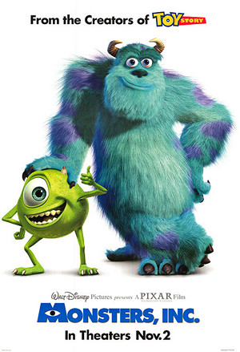

Anthony Torfs
CEO @Acomon productions©
After studying 1 year financial markets, I got bored and started a coding bootcamp called LeWagon. My mission:learn technical skills.
See for yourselfMy Favorite movies

|
1994 - Pulp FictionPulp Fiction is a 1994 American black comedy crime film written and directed by Quentin Tarantino, from a story by Tarantino and Roger Avary.[4] Tarantino's second feature film, it is iconic for its eclectic dialogue, ironic mix of humor and violence, nonlinear storyline, and a host of cinematic allusions and pop culture references. |
|  |
Monsters, Inc.Monsters Inc. centers on two monsters employed at the titular Monsters, Inc.: top scarer James P. "Sulley" Sullivan (John Goodman) and his one-eyed partner and best friend Mike Wazowski (Billy Crystal). Monsters, Inc. employees generate their city's power by targeting and scaring children, but they are themselves afraid that the children may contaminate them; when one child enters Monstropolis, Mike and Sulley must return her. |

|
AlienThe commercial vessel Nostromo receives a distress call from an unexplored planet. After searching for survivors, the crew heads home only to realize that a deadly bioform has joined them. |